Przedszkole nr 16 w Koszalinie
Publiczne przedszkole dla dzieci w wieku 3–6 lat, działające od 8 września 1975 roku na Osiedlu Wańkowicza.
Zapewniamy opiekę, wychowanie i edukację w siedmiu salach dydaktycznych, z dużym ogrodem i placem zabaw położonym wśród zieleni parku. Na tej stronie znajdą Państwo informacje o rekrutacji, opłatach, organizacji dnia oraz dokumenty przedszkola.
- Adres
- ul. Kornela Makuszyńskiego 9, 75-442 Koszalin
- Godziny pracy
- poniedziałek–piątek, 6:30–16:30
- Telefon
- 94 345 26 16
- Dyrektor
- Joanna Czerwińska
Na skróty dla rodziców
Aktualności
Ostatnie komunikaty
- Dzień Edukacji NarodowejPortal edukacyjny Koszalina
- „Koszalińska Szkoła Przyszłości”Portal edukacyjny Koszalina
- Pakiet materiałów edukacyjnych „Poznaj Finanse” w każdej szkole podstawowejPortal edukacyjny Koszalina
- Rozpoczęcie roku szkolnego 2026/2027Portal edukacyjny Koszalina
Archiwum aktualności (114 wpisów, 2019–2026)
2026
- Zaproszenie na Koszalińskie Targi Edukacyjne dla uczniów szkół podstawowychPortal edukacyjny Koszalina
- „Wyjście z klasą” przedsięwzięcie MENPortal edukacyjny Koszalina
- Dni Otwarte w koszalińskich przedszkolachPortal edukacyjny Koszalina
- Uroczyste otwarcie strzelnicy wirtualnejPortal edukacyjny Koszalina
- Ogłoszenie o otwartym konkursie ofertPortal edukacyjny Koszalina
- Wirtualny spacer po naszym przedszkoluPrzedszkole
2024
- Życzenia z okazji Dnia Edukacji NarodowejPortal edukacyjny Koszalina
- Ważna informacja!Przedszkole
- Uroczystość wręczenia nauczycielom aktów nadania stopnia awansu zawodowego nauczyciela mianowanegoPortal edukacyjny Koszalina
- Wyniki egzaminu maturalnego w roku 2024Portal edukacyjny Koszalina
- Standardy Ochrony MałoletnichPrzedszkole
- Informacja nt. obowiązku szkolnego i obowiązku nauki w Polsce dla uczniów z UkrainyPortal edukacyjny Koszalina
- Wręczenie Nagród Prezydenta Miasta Koszalina dla uczniów - 20 czerwca 2024 r.Portal edukacyjny Koszalina
- Funkcjonowanie przedszkola w wakacjePrzedszkole
- Festyn "Baw się razem z nami"Przedszkole
- Zarządzenie Prezydenta o przerwie wakacyjnejPrzedszkole
- Życzenia WielkanocnePortal edukacyjny Koszalina
- Raport "Dysleksja w Polsce 2023r."Przedszkole
- Ogłoszenie o otwartym konkursie ofertPortal edukacyjny Koszalina
- Rekrutacja do przedszkoli i klas pierwszych szkół podstawowych na rok szkolny 2024/2025Portal edukacyjny Koszalina
- Ranking miesięcznika "Perspektywy" 2024Portal edukacyjny Koszalina
- Zaproszenie na seminarium pt. "Szczęście w szkole"Portal edukacyjny Koszalina
2023
- Pomoc psychologiczno-psychiatryczna dla dzieci i młodzieżyPortal edukacyjny Koszalina
- ”Wstrzymał Słońce, ruszył Ziemię” - konkurs wiedzy o Mikołaju KopernikuPortal edukacyjny Koszalina
- Miejski Plan Adaptacji do zmian klimatuPortal edukacyjny Koszalina
- Granty na realizację zajęć pozalekcyjnych w roku szkolnym 2023/2024Portal edukacyjny Koszalina
- Zaproszenie na Seminarium o ocenianiuPortal edukacyjny Koszalina
- Życzenia z okazji Dnia Edukacji NarodowejPortal edukacyjny Koszalina
- Wręczenie Nagród Prezydenta Miasta Koszalina dla nauczycieli - 13 października 2023 rPortal edukacyjny Koszalina
- Granty na zajęcia pozalekcyjne w roku szkolnym 2023/2024Portal edukacyjny Koszalina
- KONKURS WIEDZY I UMIEJĘTNOŚCI O MIKOŁAJU KOPERNIKU pod hasłem ”Wstrzymał Słońce, ruszył Ziemię”Portal edukacyjny Koszalina
- Olimpiada Matematyczna w Przedszkolu nr 8 w KoszaliniePortal edukacyjny Koszalina
- XII Święto OptymizmuPortal edukacyjny Koszalina
- Życzenia WielkanocnePortal edukacyjny Koszalina
- Przedszkolak z Przedszkola nr 10 w Koszalinie laureatem konkursu KO na kartkę świątecznąPortal edukacyjny Koszalina
- Projekt edukacyjny „Matematycznie zakręceni”Portal edukacyjny Koszalina
- Granty na realizację zajęć pozalekcyjnych w roku szkolnym 2022/2023Portal edukacyjny Koszalina
- Projekt edukacyjny "Matematycznie Zakręceni"Przedszkole
- 1,5 % podatkuPrzedszkole
- Pomoc logopedycznaPrzedszkole
- Ogłoszenie o otwartym konkursie ofert w roku szkolnym 2023/2024.Portal edukacyjny Koszalina
- Uroczystość z okazji obchodów 75-lecia Szkoły Podstawowej nr 5 w KoszaliniePortal edukacyjny Koszalina
- Harmonogram rekrutacji do przedszkoli oraz do klas pierwszych szkół podstawowych na rok szkolny 2023/2024Portal edukacyjny Koszalina
- Granty na zajęcia pozalekcyjnePortal edukacyjny Koszalina
- Ranking 2023 ( za osiągniecia w roku 2022 )Portal edukacyjny Koszalina
2022
- Przekazanie laptopów dla dzieci z rodzin byłych pracowników PPGPortal edukacyjny Koszalina
- Życzenia z okazji Świąt Bożego NarodzeniaPortal edukacyjny Koszalina
- Zmiana stawki żywieniowejPrzedszkole
- Ekopracownia 2022 w V Liceum OgólnokształcącymPortal edukacyjny Koszalina
- XX Kongres Optymistycznych PrzedszkoliPortal edukacyjny Koszalina
- Akcje SMOK i KOSSMPortal edukacyjny Koszalina
- Wręczenie Nagród Prezydenta Miasta Koszalina dla nauczycieli - 14 października 2022 r.Portal edukacyjny Koszalina
- Życzenia z okazji Dnia Edukacji NarodowejPortal edukacyjny Koszalina
- Uroczyste rozpoczęcie roku szkolnego 2022/2023Portal edukacyjny Koszalina
- Wręczenie Nagród Prezydenta Miasta Koszalina dla uczniów - 20 czerwca 2022 r.Portal edukacyjny Koszalina
- Zapraszamy do wzięcia udziału w badaniu dotyczącym mobilności miejskiejPortal edukacyjny Koszalina
- Życzenia WielkanocnePortal edukacyjny Koszalina
- Sieć współpracy nauczycieli "Uczniowie z Ukrainy w naszych szkołach"Portal edukacyjny Koszalina
- Informacje i materiały dotyczące usług Zielonej LiniiPortal edukacyjny Koszalina
- Telefon dla rodziców dzieci uchodźców z Ukrainy w wieku przedszkolnym i szkolnymPortal edukacyjny Koszalina
- Zajęcia w Pałacu MłodzieżyPortal edukacyjny Koszalina
- Wsparcie uczniów przyjeżdżających z zagranicy w polskim systemie edukacjiPortal edukacyjny Koszalina
- Uruchomienie przez MPP-P numeru telefonu w sytuacji kryzysowej dla dzieci uchodźców wojennych z UkrainyPortal edukacyjny Koszalina
- Ogłoszenie o otwartym konkursie ofertPortal edukacyjny Koszalina
- Harmonogram rekrutacji do przedszkoli i szkół podstawowych na rok szkolny 2022/2023Portal edukacyjny Koszalina
- Ogólnopolski Ranking Szkół Ponadpodstawowych Miesięcznika "Perspektywy"Portal edukacyjny Koszalina
- Pomoc zdrowotna dla nauczycieliPortal edukacyjny Koszalina
2021
- Życzenia świątecznePortal edukacyjny Koszalina
- Zmiana stawki żywieniowej w przedszkolach prowadzonych przez Gminę Miasto KoszalinPortal edukacyjny Koszalina
- Granty PPGR – konieczność uzupełnienia wniosków o udzielenie wsparciaPortal edukacyjny Koszalina
- Międzynarodowy Program Happy Kindergarten w koszalińskich przedszkolachPortal edukacyjny Koszalina
- Ambasador EFS z KoszalinaPortal edukacyjny Koszalina
- Nabór wniosków w ramach projektu „Wsparcie dzieci z rodzin pegeerowskich w rozwoju cyfrowym – Granty PPGR”Portal edukacyjny Koszalina
- Życzenia z okazji Dnia Edukacji NarodowejPortal edukacyjny Koszalina
- Wykładowcy Politechniki Koszalińskiej będą kształcić młodych logistykówPortal edukacyjny Koszalina
- Miejska Inauguracja Roku Szkolnego 2021/2022Portal edukacyjny Koszalina
- „Koszalińska Szkoła Ćwiczeń”Portal edukacyjny Koszalina
- Powierzenie stanowisk dyrektorom koszalińskich jednostek oświatowychPortal edukacyjny Koszalina
- Wskazania do realizacji zadań w roku szkolnym 2021/2022Portal edukacyjny Koszalina
- Wręczenie aktów nadania stopnia awansu zawodowego nauczyciela mianowanegoPortal edukacyjny Koszalina
- Wyniki z egzaminu maturalnego i egzaminu ósmoklasisty w roku 2021Portal edukacyjny Koszalina
- Nowe zasady składania wniosków o dowóz dziecka/ucznia niepełnosprawnegoPortal edukacyjny Koszalina
- Standardy organizacji roku szkolnego 2021/2022Portal edukacyjny Koszalina
- Życzenia Prezydenta Miasta Koszalina z okazji zakończenia roku szkolnego 2020/2021Portal edukacyjny Koszalina
- Wręczenie nagród Prezydenta Miasta Koszalina dla uczniów za osiągnięcia w naucePortal edukacyjny Koszalina
- X Jubileuszowe Święto OptymizmuPortal edukacyjny Koszalina
- Wykaz instytucji zajmujących się poradnictwem psychologiczno-pedagogicznymPortal edukacyjny Koszalina
- Informator o szkołach ponadpostawowych na rok szkolny 2021/2022Portal edukacyjny Koszalina
- Realizacja zajęć pozalekcyjnych w roku 2020Portal edukacyjny Koszalina
- I miejsce w II Międzynarodowym Konkursie Duetów, Zespołów i Orkiestr Gitarowych WIELKA GITARAPortal edukacyjny Koszalina
- Rekrutacja do klas pierwszych szkół podstawowych na rok szkolny 2021/2022Portal edukacyjny Koszalina
- Rekrutacja do przedszkoli miejskich na rok szkolny 2021/2022Portal edukacyjny Koszalina
- Ranking miesięcznika "Perspektywy"Portal edukacyjny Koszalina
- Prawie 2 miliony zł dla żłobków, przedszkoli i szkół na walkę z COVID-19Portal edukacyjny Koszalina
2020
- Świadectwa dojrzałości 2020Portal edukacyjny Koszalina
2019
- Erasmus+ w Szkole Podstawowej nr 5 im. UNICEFPortal edukacyjny Koszalina
- Ranking 2019Portal edukacyjny Koszalina
- Piękno różnorodności czy koszmar nadmiaru? - rzeczywistość okresu adolescencjiPortal edukacyjny Koszalina
- Informatory o szkołach ponadpodstawowych i ponadgimnazjalnych na rok szkolny 2019/2020Portal edukacyjny Koszalina
O przedszkolu
Misja i priorytety
Misją przedszkola jest wychowanie człowieka otwartego na świat, przedsiębiorczego, zaradnego, pogodnego, aktywnego i twórczego, radzącego sobie z niepowodzeniami, przygotowanego do życia w rodzinie i społeczeństwie oraz świadomego własnych narodowych korzeni.
Na pierwszym miejscu stawiamy podmiotowość i dobro dziecka, jego wszechstronny rozwój na miarę indywidualnych możliwości oraz właściwe przygotowanie do nauki w szkole.
- Kadra pedagogiczna stale podnosi kwalifikacje, opracowuje programy własne i innowacje pedagogiczne.
- Rodzice uczestniczą w życiu przedszkola, pracują w Radzie Rodziców, biorą udział w uroczystościach i zajęciach otwartych.
- Organizujemy wycieczki, warsztaty, konkursy, akcje prozdrowotne i spotkania z ciekawymi ludźmi.
- Współpracujemy ze środowiskiem lokalnym oraz instytucjami działającymi na rzecz dziecka i rodziny.
Organizacja pracy
Ramowy rozkład dnia
| Godziny | Aktywność |
|---|---|
| 6:30–8:10 | Schodzenie się dzieci, indywidualne powitanie, zabawy swobodne w kącikach zainteresowań |
| 8:10–8:20 | Zabawy ruchowe i ćwiczenia kształtujące prawidłową postawę ciała |
| 8:20–9:00 | Śniadanie |
| 9:00–11:30 | Zajęcia kierowane i niekierowane, nauka języka obcego przez zabawę, pobyt na świeżym powietrzu |
| 11:30–12:10 | Obiad – pierwsze danie (zupa) |
| 12:10–13:20 | Grupy młodsze: odpoczynek. Grupy starsze: zajęcia rozwijające i przygotowanie do szkoły |
| 13:20–13:30 | Zabawa ruchowa lub muzyczno-ruchowa |
| 13:30–14:10 | Obiad – drugie danie i deser |
| 14:10–16:30 | Zabawy w sali i w ogrodzie, rozwijanie zainteresowań, odbiór dzieci |
Przerwa wakacyjna w 2026 r.: przedszkole nieczynne przez cały lipiec (zarządzenie Prezydenta Miasta Koszalina).
Oferta edukacyjna
Zajęcia i grupy
Zajęcia dobieramy do potrzeb dzieci, zaleceń poradni oraz oczekiwań rodziców.
Edukacyjne
- matematyka i logiczne myślenie (kodowanie, ozoboty, dary Froebla)
- szachy
- język angielski
- edukacja ekologiczna i prozdrowotna
- wycieczki i wyprawy edukacyjne
Rozwijające uzdolnienia
- zajęcia plastyczne i teatralne
- muzyka metodą „kolorowych dźwięków”, koncerty
- wyjazdy do teatru i kina
- zajęcia ogólnorozwojowe z elementami jogi
Specjalistyczne
- logopedyczne
- korekcyjno-kompensacyjne
- rewalidacyjne
- rozwijające umiejętności społeczno-emocjonalne
Grupy przedszkolne
Na stronach grup nauczyciele publikują miesięczne zamierzenia wychowawczo-dydaktyczne.
Wykaz realizowanych programów i projektów 2026/2027Rekrutacja
Zapisy do przedszkola
Rekrutacja do przedszkoli prowadzonych przez Gminę Miasto Koszalin odbywa się elektronicznie. W 2026 r. trwała od 2 do 20 marca.
Zapoznanie z zasadami
Instrukcja, harmonogram i kryteria rekrutacji są dostępne w systemie naboru.
Złożenie wniosku
Wniosek wypełnia się w systemie naboru elektronicznego w terminie rekrutacji.
Potwierdzenie woli
Po ogłoszeniu list zakwalifikowanych rodzic potwierdza wolę przyjęcia dziecka.
Rodzice dzieci uczęszczających do przedszkola składają kartę „Potwierdzenie woli uczęszczania dziecka do przedszkola” w terminie wskazanym przez przedszkole (w 2026 r. do 20 lutego). Nie dotyczy dzieci 6-letnich rozpoczynających naukę w klasie I, z wyjątkiem dzieci z odroczonym obowiązkiem szkolnym.
Strefa rodzica
Opłaty
| Pozycja | Podstawa | Stawka |
|---|---|---|
| Każda rozpoczęta godzina ponad bezpłatny wymiar | Uchwała Nr V/42/2024 Rady Miejskiej w Koszalinie z 27.06.2024 | 1,44 zł |
| Dzienna stawka żywieniowa | Zarządzenie Prezydenta Miasta Koszalina, obowiązuje od 01.01.2023 | 12,00 zł |
| Składka na Radę Rodziców (miesięcznie) | Regulamin Rady Rodziców; rodzeństwo 30,00 zł | 50,00 zł |
Wniosek o zwolnienie z opłat, uchwała i zarządzenia: Dokumenty do pobrania – opłaty.
Informacja publiczna
Dokumenty do pobrania
Statut, procedury, druki dla rodziców i dokumenty rekrutacyjne w jednym miejscu. Pliki PDF otworzą się w przeglądarce, pliki DOCX można edytować w edytorze tekstu.
46 plików w 8 kategoriach
Dokumenty przedszkola3
Procedury i regulaminy7
- PDFProcedura przyprowadzania i odbierania dziecka 2025/2026288 kBPobierz
- PDFRegulamin spacerów i wycieczek 2025/2026419 kBPobierz
- PDFProcedura kontaktów z rodzicami 2025/2026422 kBPobierz
- PDFProcedura udzielania pomocy psychologiczno-pedagogicznej 2025/2026458 kBPobierz
- PDFStandardy Ochrony Małoletnich w Przedszkolu nr 16799 kBPobierz
- PDFZarządzenie dyrektora w sprawie Standardów Ochrony Małoletnich82 kBPobierz
- PDFRegulamin Rady Rodziców224 kBPobierz
Druki dla rodziców8
- PDFUpoważnienie do odbioru dziecka 2026/202758 kBPobierz
- DOCXOświadczenia i zgody rodziców 2026/202731 kBPobierz
- DOCXZgoda na uczestnictwo w zajęciach religii 2026/202716 kBPobierz
- PDFOświadczenie o miejscu zamieszkania dziecka (2025)612 kBPobierz
- PDFWniosek o wydanie informacji o dziecku264 kBPobierz
- PDFWniosek o zwolnienie z opłat66 kBPobierz
- DOCXWniosek o zwolnienie z opłat (wersja do edycji)22 kBPobierz
- DOCXOświadczenie dotyczące opłat19 kBPobierz
Opłaty i organizacja6
- DOCXInformacja dla rodziców o opłatach za pobyt i wyżywienie14 kBPobierz
- PDFUchwała Rady Miejskiej w sprawie opłaty przedszkolnej (2024)1,4 MBPobierz
- PDFZarządzenie w sprawie stawki żywieniowej163 kBPobierz
- PDFZarządzenie w sprawie przerwy wakacyjnej251 kBPobierz
- PDFZasady korzystania z systemu iPrzedszkole154 kBPobierz
- DOCXInstrukcja logowania do systemu iPrzedszkole16 kBPobierz
Rekrutacja6
- PDFZarządzenie w sprawie harmonogramu rekrutacji 2026249 kBPobierz
- PDFKryteria rekrutacji do przedszkoli418 kBPobierz
- PDFSkrót informacji o naborze278 kBPobierz
- PDFRekrutacja do przedszkoli – instrukcja142 kBPobierz
- PDFInstrukcja rekrutacyjna dla przedszkoli290 kBPobierz
- PDFPodręcznik dla kandydata (system naboru)2,8 MBPobierz
Ochrona danych osobowych (RODO)9
- PDFInformacja o przetwarzaniu danych osobowych w Przedszkolu nr 16250 kBPobierz
- PDFKlauzula informacyjna – dziecko i rodzice68 kBPobierz
- PDFKlauzula informacyjna – osoby odbierające dziecko66 kBPobierz
- PDFKlauzula informacyjna – przedszkole zastępcze66 kBPobierz
- PDFKlauzula informacyjna – kontrahenci64 kBPobierz
- PDFKlauzula informacyjna – pracownik69 kBPobierz
- PDFKlauzula informacyjna – rekrutacja, pracownik pedagogiczny88 kBPobierz
- PDFKlauzula informacyjna – rekrutacja, pracownik niepedagogiczny67 kBPobierz
- PDFKlauzula informacyjna – rejestr sprawców przestępstw na tle seksualnym435 kBPobierz
Zamierzenia wychowawczo-dydaktyczne grup (wrzesień)6
- PDFGrupa I – Biedronki193 kBPobierz
- PDFGrupa II – Motylki380 kBPobierz
- PDFGrupa III – Pszczółki212 kBPobierz
- PDFGrupa IV – Mrówki443 kBPobierz
- PDFGrupa V – Żabki227 kBPobierz
- PDFGrupa VI – Ważki242 kBPobierz
Dokumenty archiwalne1
Nie znaleziono dokumentu o tej nazwie. Spróbuj innego słowa albo skontaktuj się z przedszkolem.
- Nazwa
- Przedszkole nr 16 w Koszalinie
- Adres
- ul. Kornela Makuszyńskiego 9
75-442 Koszalin - Telefon / fax
- 94 345 26 16
- Godziny pracy
- pon.–pt. 6:30–16:30
- NIP
- 669-23-10-960
- REGON
- 320945603
Współpraca
Programy i akcje, w których uczestniczymy
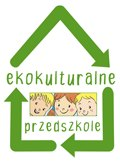
Ekokulturalne przedszkole 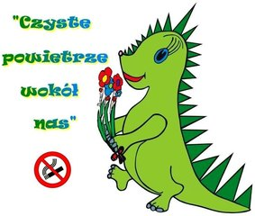
„Czyste powietrze wokół nas” 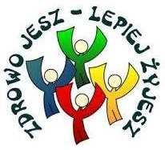
„Zdrowo jesz – lepiej żyjesz” 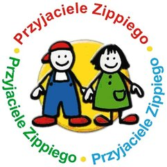
„Przyjaciele Zippiego” Dary Froebla 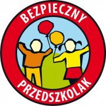
„Bezpieczny Przedszkolak” 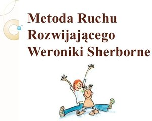
Metoda Ruchu Rozwijającego Weroniki Sherborne 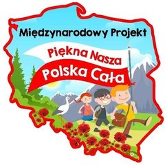
„Piękna Nasza Polska Cała” 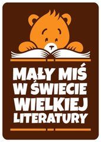
„Mały Miś w Świecie Wielkiej Literatury” 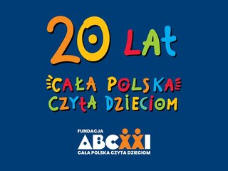
„Cała Polska czyta dzieciom” 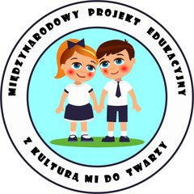
„Z kulturą mi do twarzy” 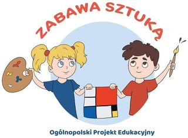
„Zabawa Sztuka”